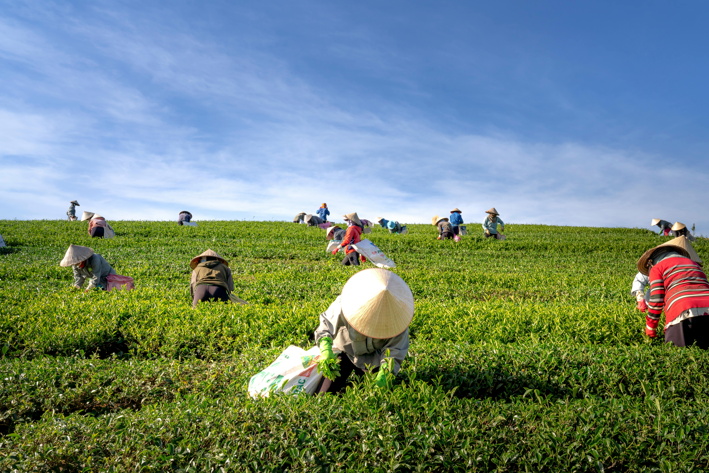
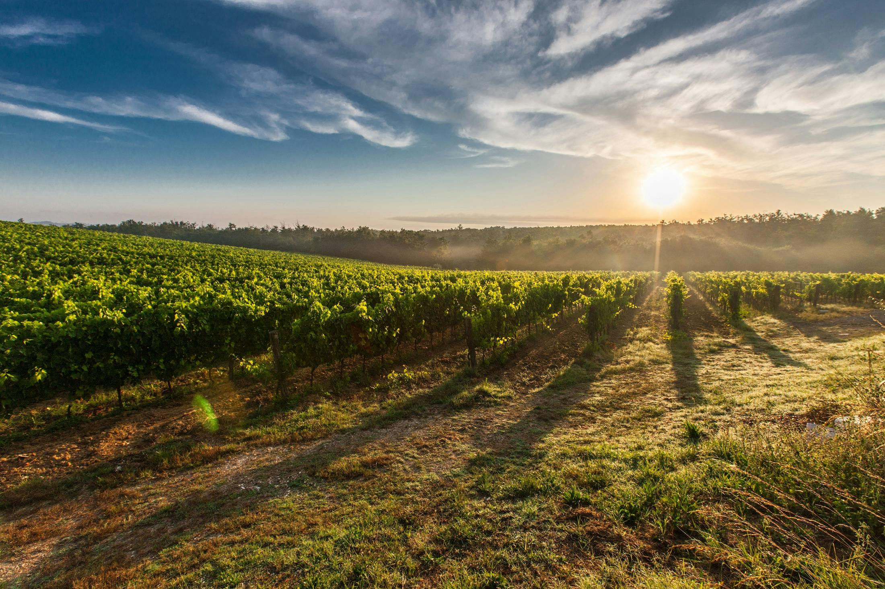
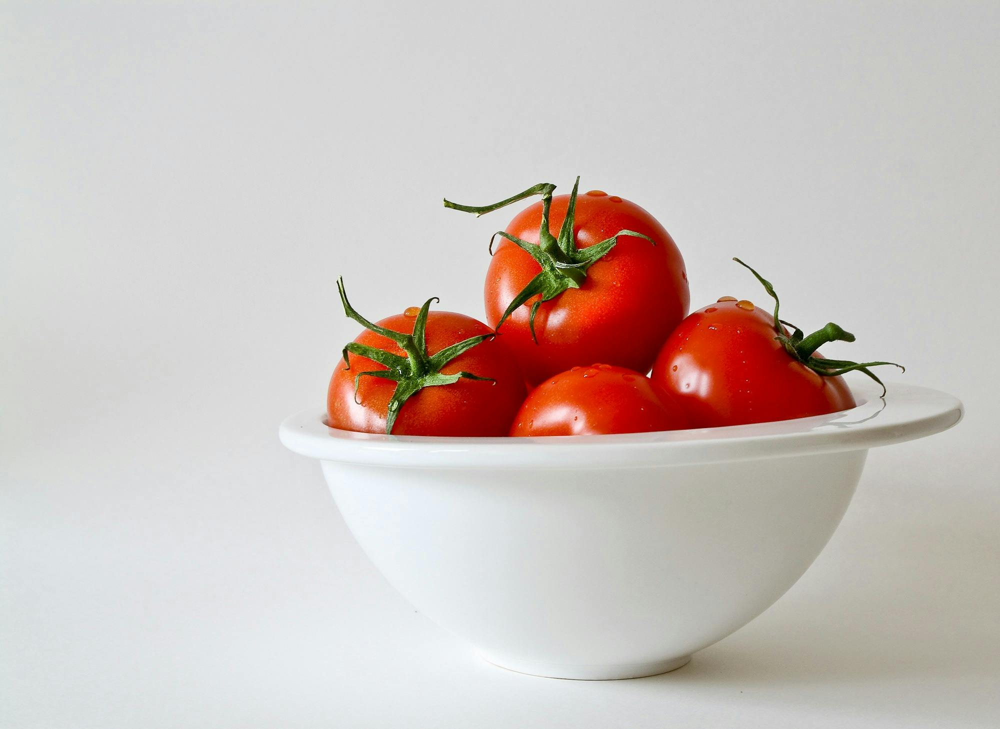
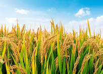
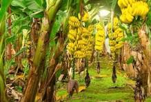
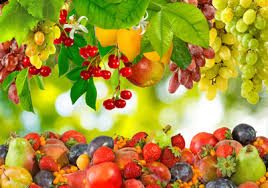
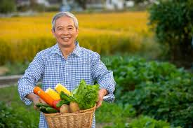
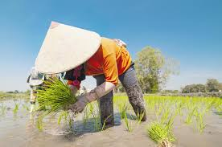

Agriculture is the practice of cultivating the soil, planting, raising, and harvesting both food and non-food crops, as well as livestock production. Broader definitions also include forestry and aquaculture. Agriculture was a key factor in the rise of sedentary human civilization, whereby farming of domesticated plants and animals created food surpluses that enabled people to live in the cities. While humans started gathering grains at least 105,000 years ago, nascent farmers only began planting them around 11,500 years ago. Sheep, goats, pigs, and cattle were domesticated around 10,000 years ago. Plants were independently cultivated in at least 11 regions of the world. In the 20th century, industrial agriculture based on large-scale monocultures came to dominate agricultural output.
Access practical tutorials and step-by-step guides to master modern and traditional farming techniques.
Learn MoreDiscover detailed information on various crops, including cultivation, soil needs, and harvesting tips.
Learn MoreLearn about integrated pest management, organic remedies, and effective pest detection techniques.
Learn More
Access practical tutorials and step-by-step guides to master modern and traditional farming techniques.
Learn More About This Topic
Discover detailed information on various crops, including cultivation, soil needs, and harvesting tips.
Learn More About This Topic
Learn about integrated pest management, organic remedies, and effective pest detection techniques.
Learn More About This Topic


Some quick example text to build on the card title and make up the bulk of the card’s content.
Learn More About This TopicSome quick example text to build on the card title and make up the bulk of the card’s content.
Learn More About This TopicSome quick example text to build on the card title and make up the bulk of the card’s content.
Learn More About This Topic